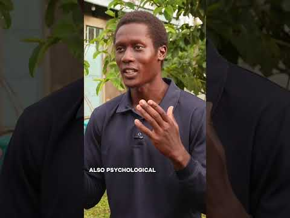
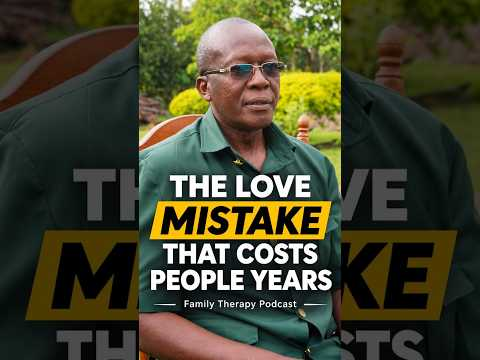
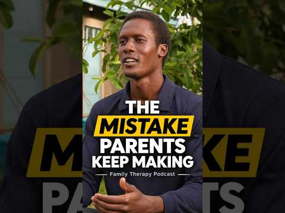
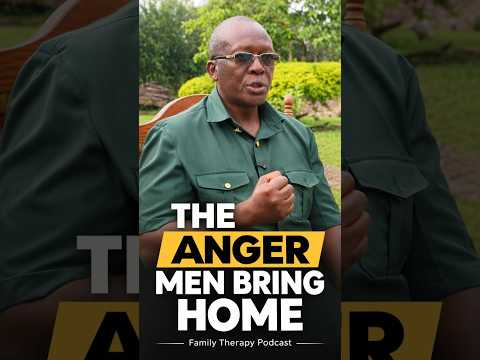

Communication
Why we stop opening up to our parents
What happens when a child no longer feels safe enough to share what is on their mind?
NOVEMBER 20, 2026 · WATCH EPISODE ↗Real talks about parenting, relationships and the moments that shape how we show up for one another. Listen, reflect, and find a starting point for your next conversation.
Video loads from YouTube when you press play.
Start with a question that feels familiar. Each episode opens up a different part of family life.

What happens when a child no longer feels safe enough to share what is on their mind?
NOVEMBER 20, 2026 · WATCH EPISODE ↗A father and son reflect on pain, listening, forgiveness and the work of repairing a relationship.
NOVEMBER 15, 2026 · WATCH EPISODE ↗
A personal conversation about honesty, uncertainty and the choices we make in love.
NOVEMBER 13, 2026 · WATCH EPISODE ↗
Listening without rushing to advise can help an adult child feel heard and respected.
NOVEMBER 13, 2026 · WATCH EPISODE ↗
A look at pressure, anger and the effect home conflict can have on the people around us.
NOVEMBER 10, 2026 · WATCH EPISODE ↗Visit the channel for the full video archive and the newest conversations.
EXPLORE THE CHANNEL ↗Short reads to carry the conversation further. Sample article ideas below are based on recent show themes; final posts and wording will be developed with the hosts.
Silence can be a sign that a young person expects correction before understanding. A starting point for parents: make space, ask gently, and listen through the pause.
Why adult children may need curiosity and acknowledgment more than another instruction.
A reflection on stress, anger and the effect our reactions have on the people closest to us.
Audio editions for listening on the move. Each episode will have a web player and an MP3 download when the audio file is supplied.
Player appearance shown for the concept. Audio controls and downloads will activate when the MP3 episodes are ready.
Family Therapy Podcast makes space for open conversations about parenting, relationships, emotional health and the ways families can better understand one another. The show brings lived experience and thoughtful discussion to topics many people find hard to raise.
Whether you are listening on your own or sharing an episode with someone close, we hope you find a useful prompt to take into everyday life.
This is a draft description based on public channel materials. Host biography, professional credentials, services and the show’s preferred wording need the host’s review before publication.